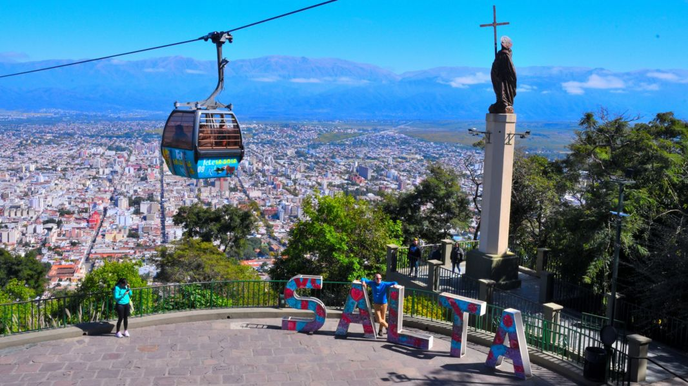

Bienvenidos
Salta es una provincia ubicada en el norte de Argentina,conocida por sus paisajes,cultura, historia y comidas tradicionales.
En este sitio web vamos a mostrar informacion turitica sobre Salta,lugares mas visitados y actividades para realizar.
